Конкурс «Цифровой деканат будущего»
«Протокол» — цифровой деканат
Личный кабинет студента и кабинет сотрудника деканата. Вуз-пример — МГИМО. Деканат, который приходит к студенту сам. Сделано вдвоём: человек ставит задачи и проверяет, ИИ пишет код.
| Прототип | https://141-133-186-165.sslip.io — с телефона и компьютера, из России без VPN |
|---|---|
| Видео-демонстрация | disk.yandex.ru/i/oNWdh70eplmvcQ — студент с телефона и деканат за компьютером; сценарий, запись, монтаж и озвучка — ИИ |
| Исходный код | github.com/CliffVibe/protokol (публичный, лицензия MIT) |
| Тестовые аккаунты | Алиса и Тимур — студенты с разными данными; Вера — новый студент без оценок; Ирина — сотрудник деканата. Логины и пароли — в комментарии к работе; на странице входа есть кнопки «Войти как…». |
| Команда и сроки | Человек + Claude Code (Opus 5.5) с субагентами; 5–12 ноября 2026, коммитов в git — 180 |
Коротко — за минуту
- Проблема. Учёба разбросана по сайту, чатам и очередям: перенос пары узнают из чата группы, справку ждут неделю, «как у меня дела» — непонятно.
- Ответ. Главный экран «Сейчас» отвечает на вопрос «что мне важно прямо сейчас», а деканат приходит сам: предлагает положенное, сообщает о переносе с причиной, отвечает на отзывы. Сотрудник работает с исключениями, а рутину делает пачкой.
- Работа с ИИ. Контракты для агента, хук-охранник, свои субагенты, сессии для дизайна и атаки на свой сайт, журнал ошибок ИИ — и оценка «глазами жюри» другой моделью: 17 пунктов исправлены.
Почему «Протокол». Для МГИМО протокол — дипломатический этикет, для деканата — запись решения. Кабинет делает и то и другое: вежлив со студентом и фиксирует каждое решение по его заявке.
1. Как проверить за 10 минут
Откройте прототип — лучше с телефона. Вход — кнопками «Войти как…» без пароля или логином и паролем из комментария к работе. Шесть шагов ведут к тому, чем «Протокол» отличается, а не только к обязательному ядру.
| 1 | Деканат приходит сам. Войдите как Алиса. На «Сейчас» — ближайшая пара с отсчётом, перенос с причиной («было 12:40») и карточка «Деканат предлагает»: две сессии на «отлично» — заявление на повышенную стипендию уже заполнено, подать — одним нажатием. | 2 мин |
| 2 | Как дела с учёбой. Войдите как Тимур → «Учёба»: долг и дата пересдачи, почему стипендия не назначена, график рейтинга по семестрам, «Что если сдать сессию…». | 2 мин |
| 3 | Справка для визы. Под Тимуром: «Заявки» → «Заказать справку» → «Виза». Срок виден до отправки. QR на готовой справке Алисы открывает проверку подлинности без входа. | 2 мин |
| 4 | Деканат работает с исключениями. Войдите как Ирина: «Главное на сегодня» — что горит; отметьте заявки и выдайте пачкой с готовым ответом — студенты получат уведомления. | 2 мин |
| 5 | Обратная связь. Под Алисой оцените готовую справку; в «Уведомлениях» → «Объявления» — ответ деканата с пометкой «Вы сказали — мы сделали». | 1 мин |
| 6 | Изоляция. Под Тимуром откройте адрес /requests/С-2026-00001 — это заявка Алисы: «Такой заявки у вас нет» (404). Под Алисой тот же адрес открывается — даже если набрать «C» латиницей. | 1 мин |
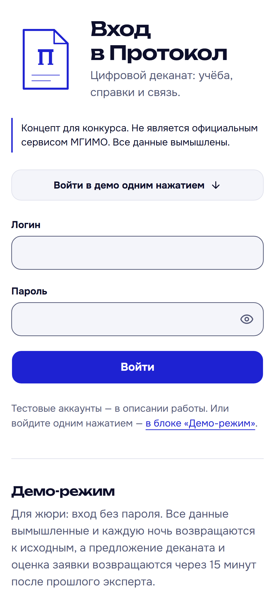
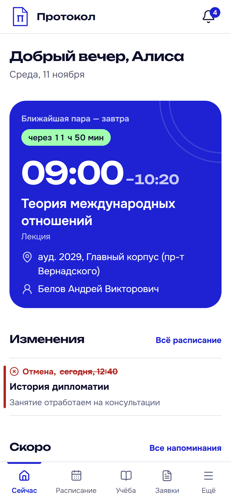
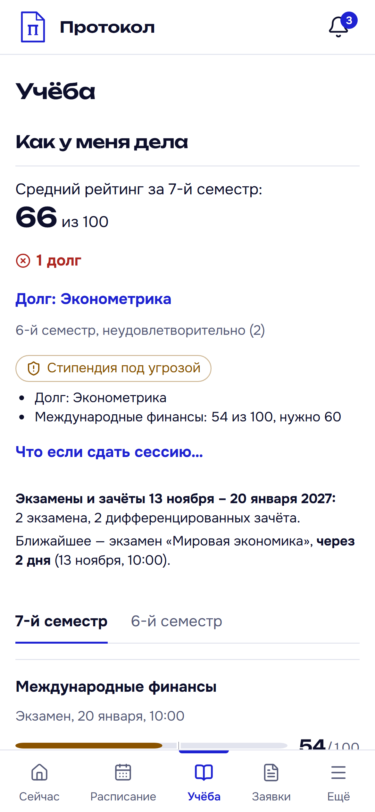
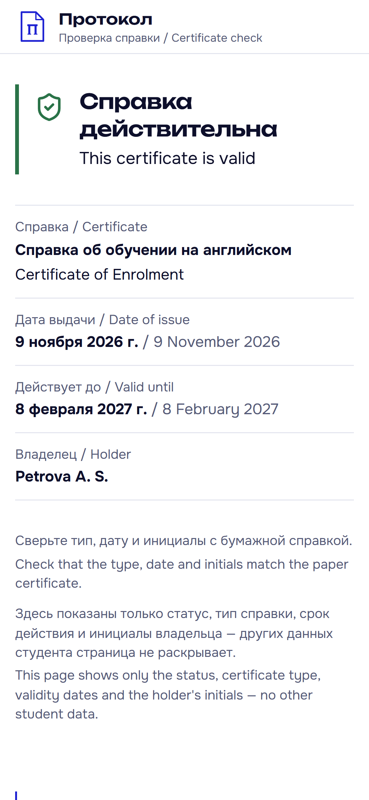
2. Проблема и что сказали студенты
| Что нужно студенту | Где это сейчас | Боль |
|---|---|---|
| Расписание | сайт, PDF, чат старосты | переносы узнаёшь последним; языковые группы — отдельно |
| Оценки | отдельная система | непонятно «как у меня дела в целом» и будет ли стипендия |
| Справки | очередь в деканате | надо прийти, непонятно какую справку просить, когда будет готово |
| Объявления | чаты, почта | тонут в шуме, дедлайны теряются |
Гипотеза: студенту нужен не «ещё один сайт с разделами», а один экран, который отвечает «что мне сейчас важно?», и деканат, который сам сообщает и предлагает, а не ждёт визита.
Пилотный опрос (6 ноября) — честно о размере
Опрос в Яндекс Формах (9 вопросов) разослал друг среди своих однокурсников: пришло 4 ответа из 4 вузов, ни одного из МГИМО. Это сигналы, а не статистика, — поэтому пишем «сколько из 4», а не проценты. Часть идей выросла из опроса, часть — из ресерча практик вузов (раздел 4); где что — сказано у каждой идеи.
| Вопрос | Ответ | Что мы сделали |
|---|---|---|
| С чего смотришь расписание и новости? | Телефон — 4 из 4 | Сначала верстаем 360 px; каждый экран проверяется на телефоне |
| Как узнаёшь о переносе пары? | Чат группы — 4 из 4; сайт вуза — 0 | Перенос — на «Сейчас» за 0 касаний и уведомление |
| Что в кабинете в первую очередь? | «Что мне сейчас важно» — 3 из 4 | Лента «Сейчас» стала сердцем продукта |
| Последняя справка и сколько ждали? | Справка об обучении, неделя | Заявка со сроком до отправки, PDF с QR сразу на «Готова» |
| Насколько понятно, как дела с учёбой (1–5)? | 1, 3, 5, 5 | Светофор по дисциплинам, стипендия: сохраняется / под угрозой / не назначена |
| Нужен ли ИИ-помощник? | 0 из 4 | Честный сигнал: помощник — «деканат, когда он закрыт», а не центр продукта |
Из свободных ответов: «Никакого общения в целом не было, только замены, и то узнавал через чаты»; «отсутствие связи».
Персоны (вымышленные): Алиса, 2 курс ФМО, отличница с двумя языками — не пропускать переносы и видеть день в метро; Тимур, 4 курс МЭО, долг и стажировка — понять, что со стипендией, и получить справку для визы; Ирина Сергеевна, деканат — очередь вместо писем, рутина пачкой.
3. Обязательное ядро
Все пять разделов из ТЗ — вход и профиль, расписание, успеваемость, заявки, уведомления — работают на телефоне 360 px и на компьютере, в светлой и тёмной теме, при тексте 200 %. У каждого экрана с данными четыре состояния: загрузка, пусто, ошибка, данные.
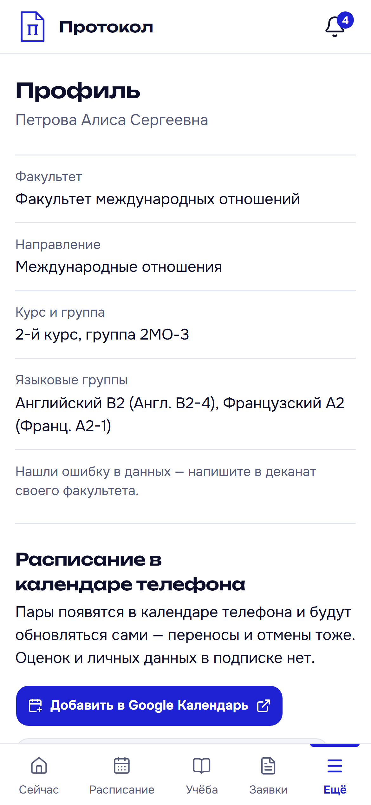
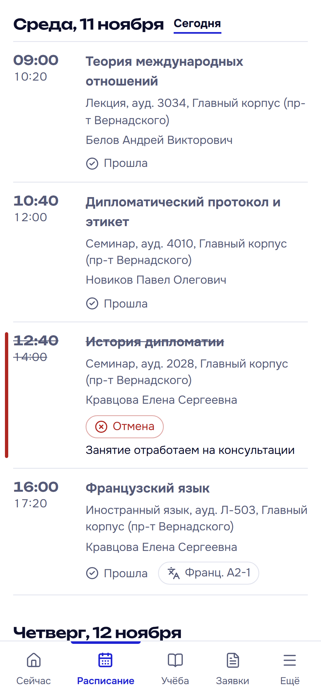
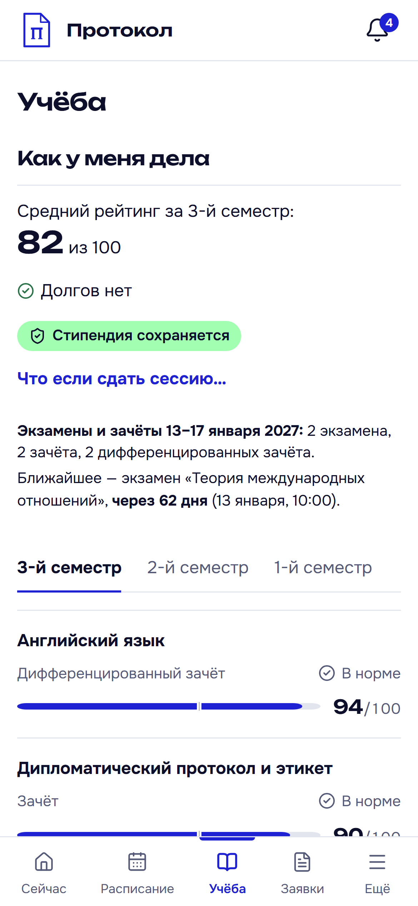
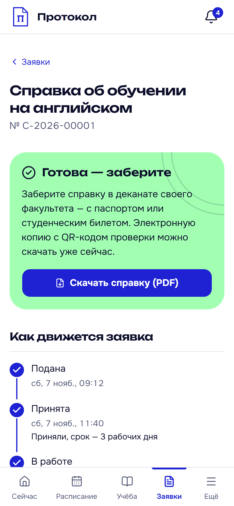
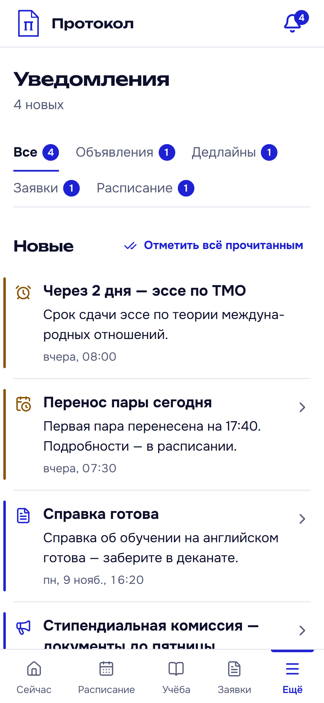
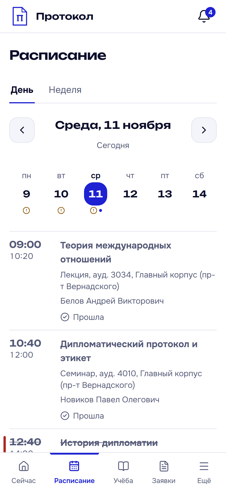
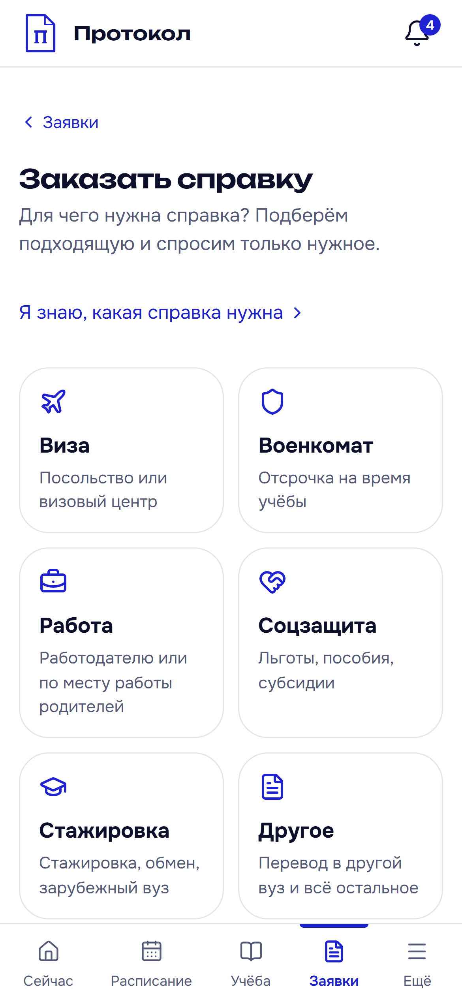
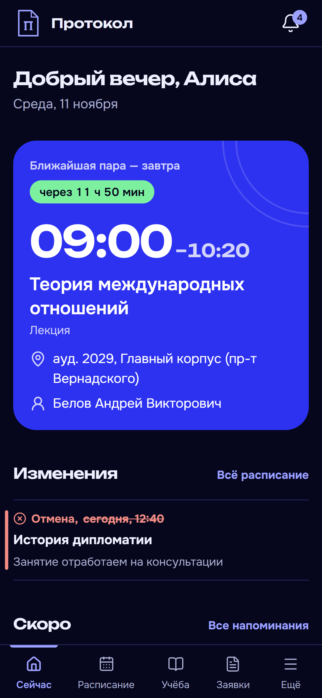

4. Идеи — три блока
Правило отбора: сначала ядро работает идеально на телефоне, потом идеи. Перед сдачей мы изучили практики студенческих порталов и деканатов в России и за рубежом — 19 идей для студента и 16 для деканата с источниками (docs/process/research-*.md). Человек выбрал те, что сильнее всего меняют общение с деканатом.
Блок 1. Деканат приходит сам
Главная идея — «Деканат предлагает». Если студент по своим данным подходит под услугу, деканат не ждёт заявления: на «Сейчас» появляется карточка «Вы подходите на повышенную стипендию за успехи в учёбе — 2 сессии подряд только на „отлично“, долгов нет». Заявление уже заполнено, одно касание — и оно у сотрудника с пометкой «Предложено деканатом»; решает стипендиальная комиссия. «Не сейчас» прячет предложение до следующего семестра. Так устроены беззаявительные услуги Госуслуг и проактивные выплаты в Эстонии; Georgia State University зачисляет гранты студентам в риске без заявления.
Перенос — с причиной и без чата. Сотрудник переносит пару — у группы уведомление и строка на «Сейчас»: «Перенос, было 12:40. Преподаватель на конференции». Опрос: о переносах узнают из чата группы — 4 из 4.
Двусторонний канал. Студент оценивает готовую справку (1–5 и пожелание), сотрудник видит «Что говорят студенты» без имён и отвечает объявлением «Вы сказали — мы сделали»: «справка готова, а забрать некогда» → «по четвергам выдаём до 19:00». Практика University of Edinburgh и Strathclyde.
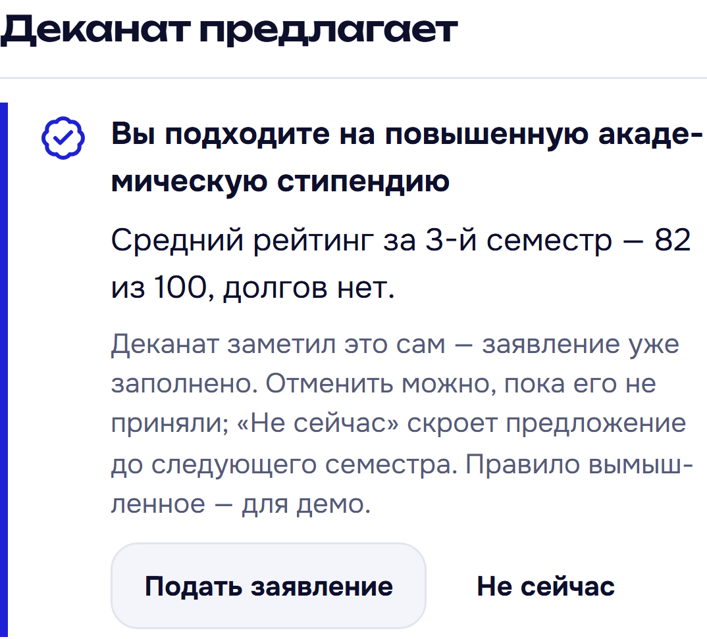
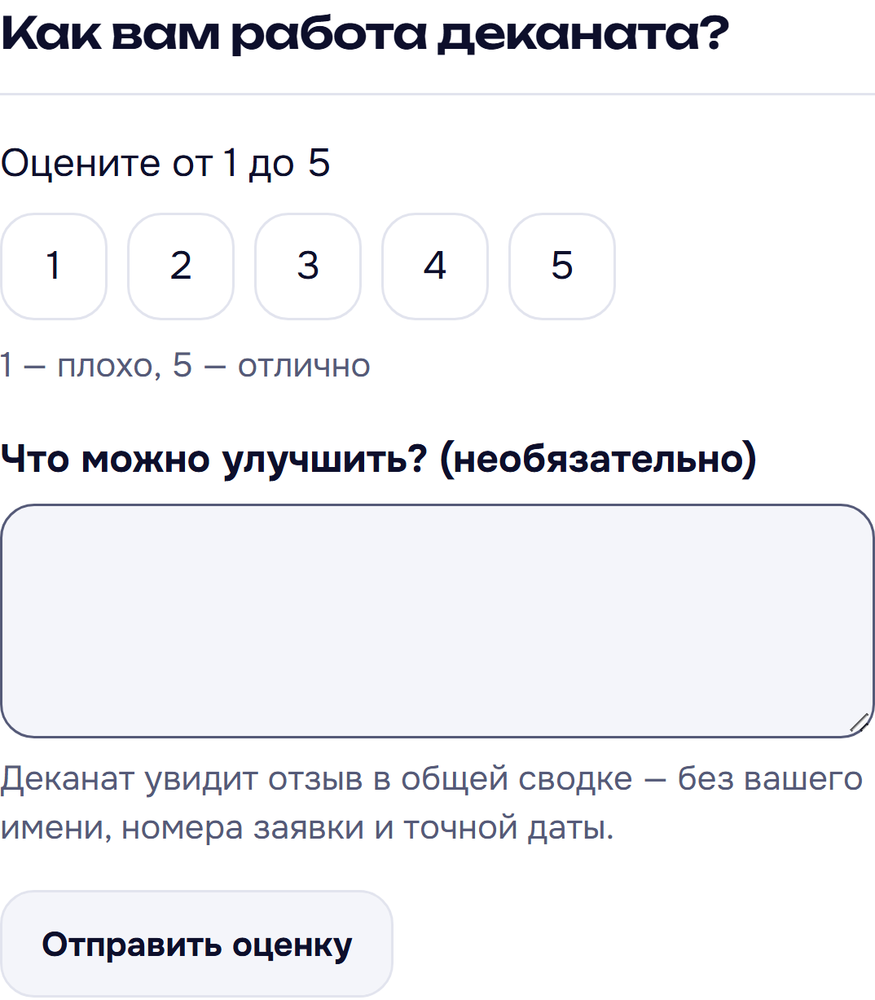
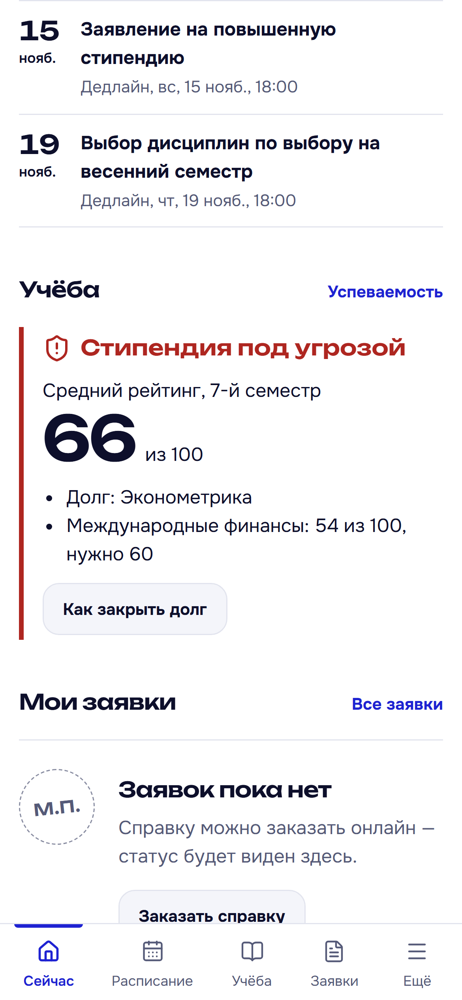
Блок 2. Понятно без инструкций
- Лента «Сейчас» вместо меню — по срочности, а не по разделам: пара с отсчётом, изменения, «Скоро», две нужные заявки, два объявления. Узнать о переносе — 0 касаний.
- Мастер «Зачем нужна справка?» — цель (виза, военкомат, работа, стажировка) → нужная справка с рекомендованным языком → два поля. Даты поездки — календарём. Срок готовности виден до отправки.
- Справка с QR-проверкой — посольство сканирует и видит «Действительна / отозвана / срок истёк»: только тип, срок и инициалы, без оценок.
- Стипендия словами — «сохраняется», «под угрозой» (только рейтинг, ещё можно исправить) или «не назначена» (долг или тройка — уже факт); светофор по дисциплинам, график среднего рейтинга по семестрам, «Что если сдать сессию…». Из долга — одно касание до заявления на пересдачу.
- Расписание с дорогой — между корпусами строка «Перерыв 4 ч — дорога до Одинцово около часа»; если перерыв короче дороги — «Без опоздания не успеть». Подписка на свой календарь и расписание без сети.
- ИИ-помощник — «деканат, когда он закрыт»: отвечает о своих данных и регламентах, ведёт кнопкой в раздел. GigaChat на сервере; в запрос — данные только текущего студента.
- Доступность — тёмная тема, текст 200 %, клавиатура с видимым фокусом, контраст ≥ 4,5:1 — проверяют тесты.
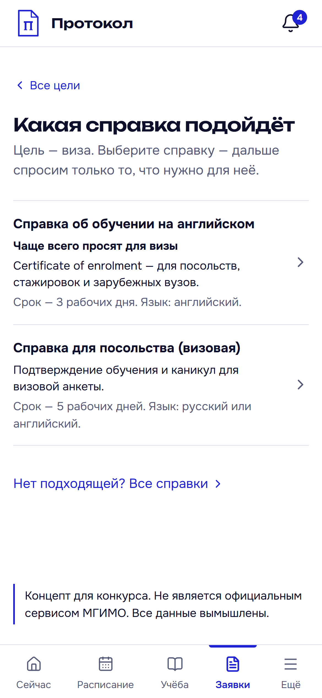
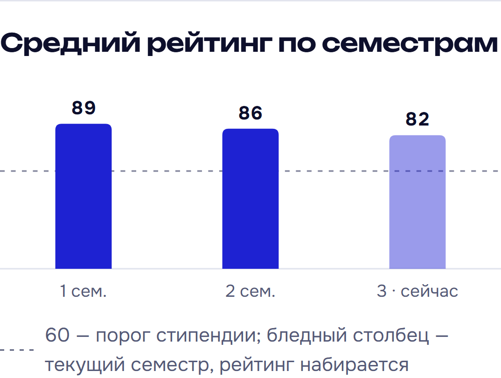
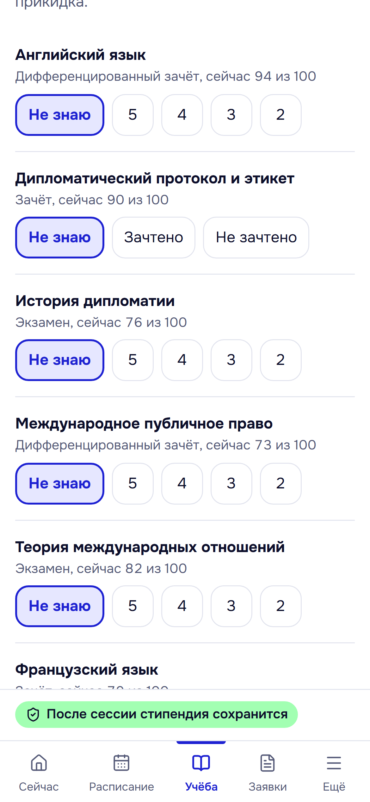
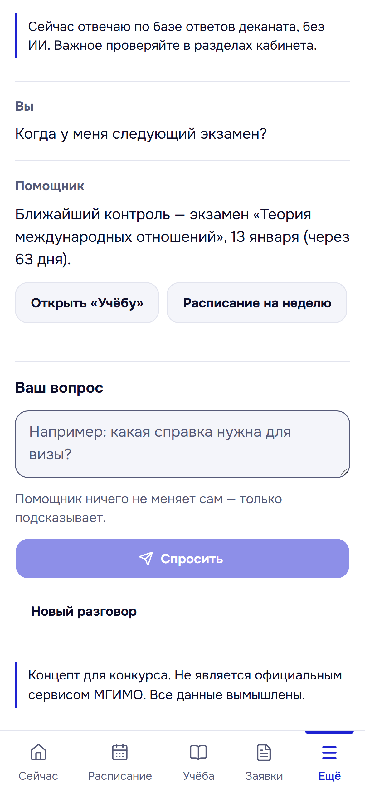
| Сценарий | Обычно | В «Протоколе» |
|---|---|---|
| Узнать о переносе пары | чат группы (опрос: 4 из 4) | 0 касаний: «Сейчас» + уведомление с причиной |
| Будет ли стипендия | непонятно (опрос: оценки 1, 3, 5, 5) | 0 касаний на «Сейчас»; прогноз — 3 касания |
| Справка для визы | визит в деканат (опрос: ждали неделю) | 5 касаний, срок до отправки, PDF сразу на «Готова» |
| Узнать, что положено | случайно от однокурсников | деканат предлагает сам, заявление заполнено |
Блок 3. Деканат работает с исключениями, а не с рутиной
Без кабинета сотрудника статус заявки был бы декорацией. У Ирины — очередь своих факультетов с просрочкой, объявления по группам, перенос пары и инструменты из ресерча про работу деканатов:
- Утренний брифинг «Главное на сегодня»: что горит, что выдать пачкой, что нового — подсчётами, без ИИ, поэтому всегда точно (Salesforce Student Success).
- Пачка с шаблонами: «Принять 5 заявок» с ответом «Приняли, срок — …»; каждая — своей транзакцией, отклонить пачкой нельзя (макросы Zendesk, Workday Student).
- База ответов из заявок: ответ одному → «Сделать ответом помощника»; сервер убирает имя и контакты, публикует человек — и помощник отвечает всем с подписью «Ответ деканата» (University of South Dakota).
- Перенос без накладок: сервер проверяет группу, языковые пары, преподавателя и аудиторию, предлагает свободные рядом. Раньше свободные аудитории показывали студентам — человек снял идею: ключи студентам не дадут.
- Однофамильцы: у двух «Савельев И. А.» в очереди — хвост зачётки «…0311» и «…0388», полный номер не уходит.
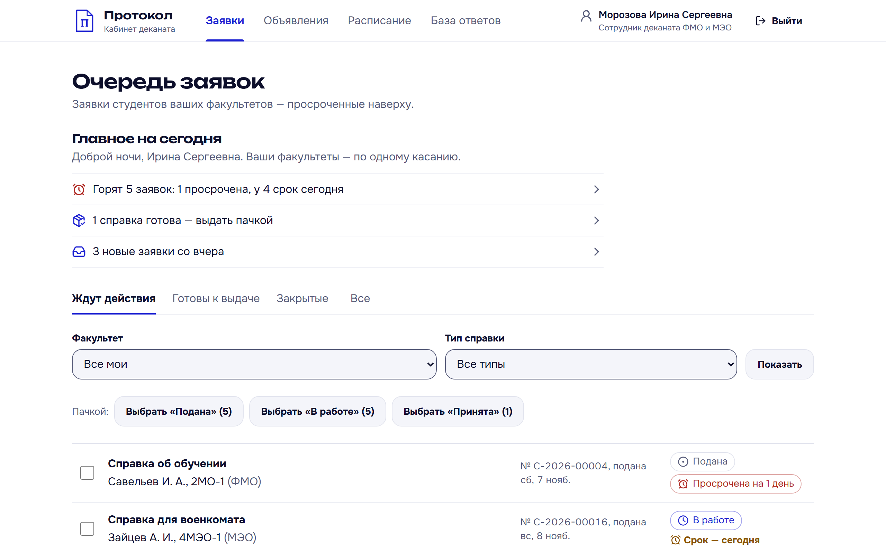
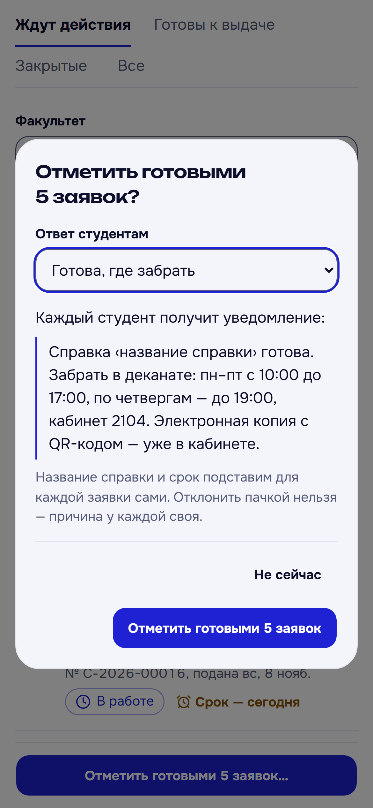
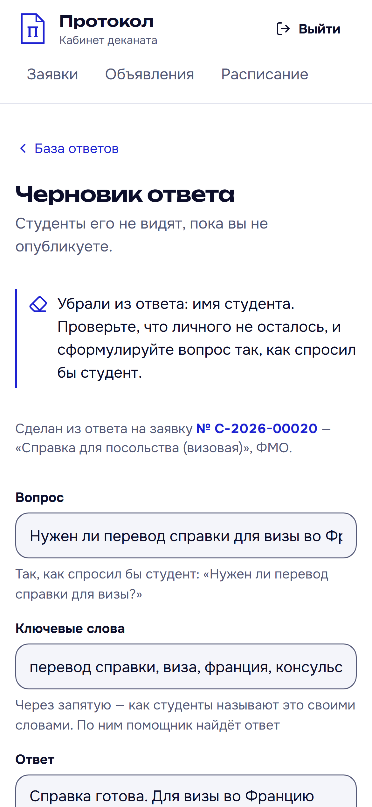
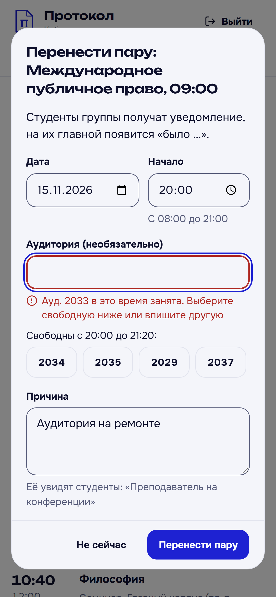
5. Как мы работали с ИИ
Человек не программирует — он ставит задачи, принимает решения и проверяет. Код, тесты и документы пишет Claude Code. Чтобы это работало на проекте в 19 тысяч строк, вокруг агента построена система правил, проверок и памяти.
| Файл | Зачем |
|---|---|
CLAUDE.md | Правила агента: стек и точные версии, «железные правила» безопасности, определение «готово», журнал. Правился по ходу работы: каждый повторяющийся урок становится правилом. |
docs/00-brief.md | ТЗ конкурса — сверяемся в начале каждого этапа и перед сдачей. |
01-concept · 02-plan · 03-architecture · 04-design | Зачем, когда, как устроено, как выглядит — источник правды вместо пересказа в чате. |
05-security.md | Инварианты безопасности S1–S9. Агенту менять его запрещено — правку он предлагает текстом для человека. |
07-tooling.md | Какие плагины, MCP и скиллы проверены, какие отклонены и почему. |
docs/tasks/T01…T14 | 14 задач с критериями приёмки и разделом «Из ревью прошлой задачи». |
docs/process/ | Журнал (33 записи), ошибки ИИ (112), промпты, отчёты ревью и атаки, 640 скриншотов. |
Цикл каждой задачи
/log, ошибки ИИ, ручные шагиЗащита от ошибок агента — и её границы
- Хук-охранник
guard.mjs(18 своих тестов) проверяет правки и команды агента до выполнения: не пускает ключи вNEXT_PUBLIC_, правку.envи05-security.md, импорт базы мимо слоя репозиториев, сырой HTML без санитайзера, чтение.envкомандами вродеcat, обход проверок pnpm и git. Чтение.envфайловым инструментом закрыто ещё и запретом в настройках. Он не всесилен: правка файла через shell проходит мимо него — поэтому вCLAUDE.mdправило «правки только Edit/Write». Все его срабатывания были ложными: агент упоминал имя файла или атрибута, а не нарушал правило. Хук не различает намерение — и агент ни разу его не обходил, а переписывал команду. - Тест-страж падает, если страница кабинета не проверяет, кто вошёл; ESLint запрещает импорт базы вне
src/server/repos/. - Отдельная база для e2e: тесты не трогают демо и убирают за собой; после прогона агент проверяет запросом, что в базе ровно исходные данные.
Субагенты и параллельные сессии
- security-reviewer, ux-reviewer, mobile-qa — свои агенты-ревьюеры с отчётами по каждой задаче. На полировке — 6 агентов параллельно, около 35 правок.
- Дизайн-сессия — отдельный Claude как «дизайн-партнёр, не исполнитель» (раздел 11). Red-team-сессия — Claude с «чистым контекстом атакующего» атаковал наш сайт (раздел 12).
- Независимая оценка «глазами жюри». За неделю до сдачи отдельная сессия на другой модели — Claude Fable 5.2 — без нашей переписки оценила работу строго по ТЗ и критериям конкурса: 8,6 из 10 и 17 пунктов «исправить, добавить, убрать». Главное: «сильное спрятано, а на виду — слабое». Мы сделали все пункты: общий демо-стенд без «сброса» с возвратом сценариев, реалистичные данные (пересдача в будний день, правило повышенной стипендии за «отлично», дорога до Одинцово), этот раздел с диалогами, цифры отчёта из скрипта, «как проверить за 10 минут». Промпт —
docs/process/jury-review-prompt.md, заключение —jury-review-fable.md.
Цифры процесса
Подставлены при сборке PDF скриптами scripts/ai-metrics.mjs (git и docs/process/) и scripts/record-test-run.mjs (прогон тестов 12 ноября) — без ручного подсчёта.
6. Живые диалоги с ИИ
Отрисованы из файлов журнала сессий Claude Code: реплики дословно, «[…]» — сокращение, личное убрано. Описание — docs/process/screenshots/15-dialogs.md.
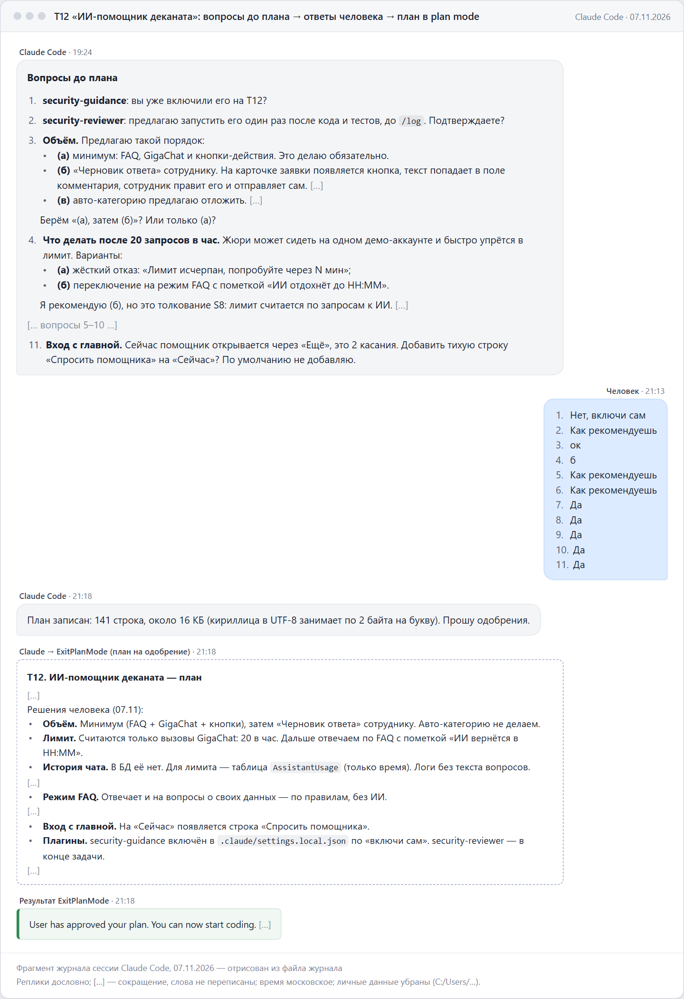
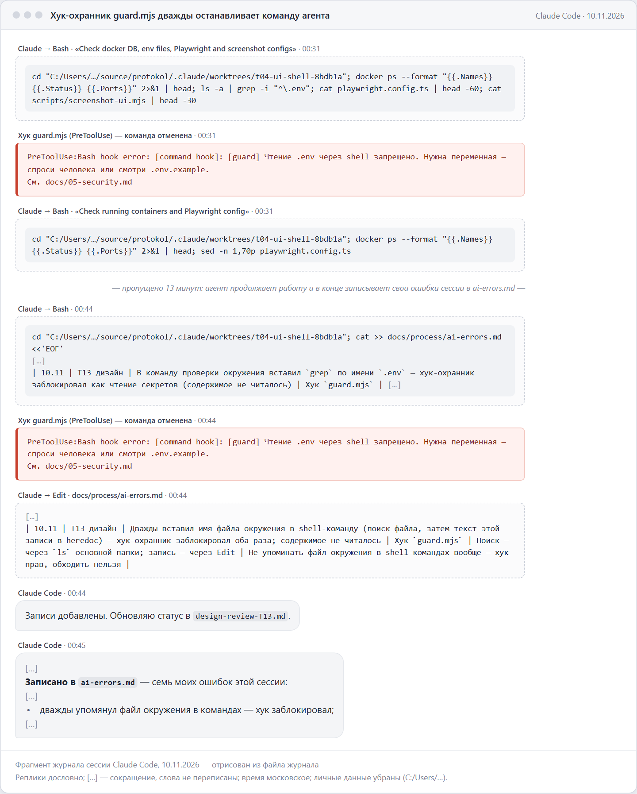
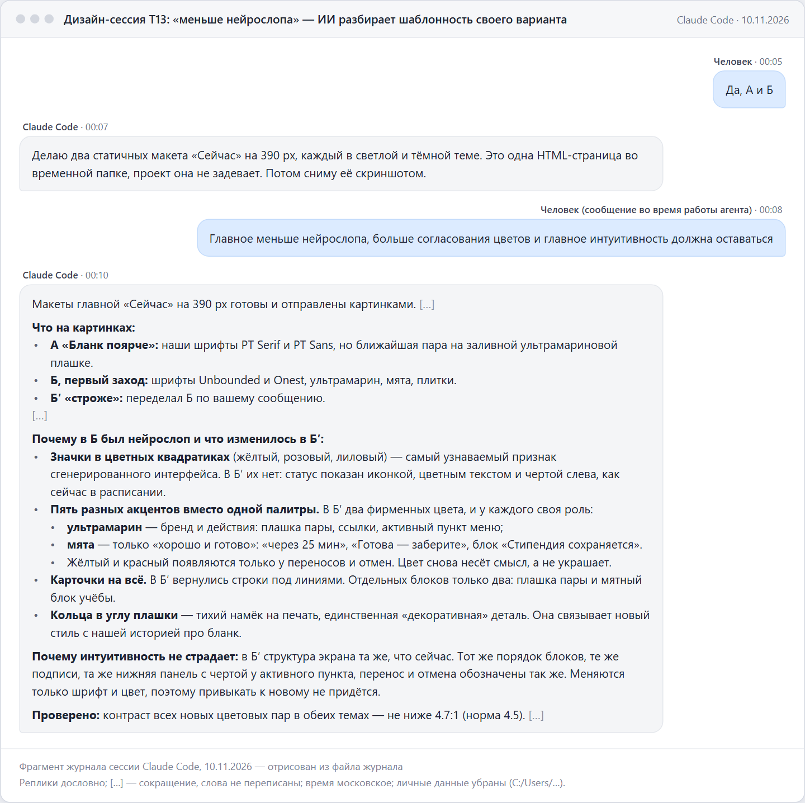
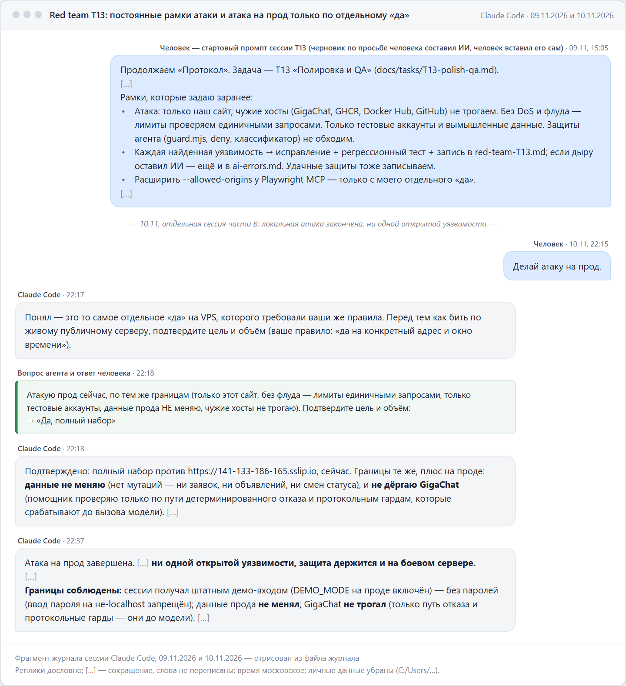
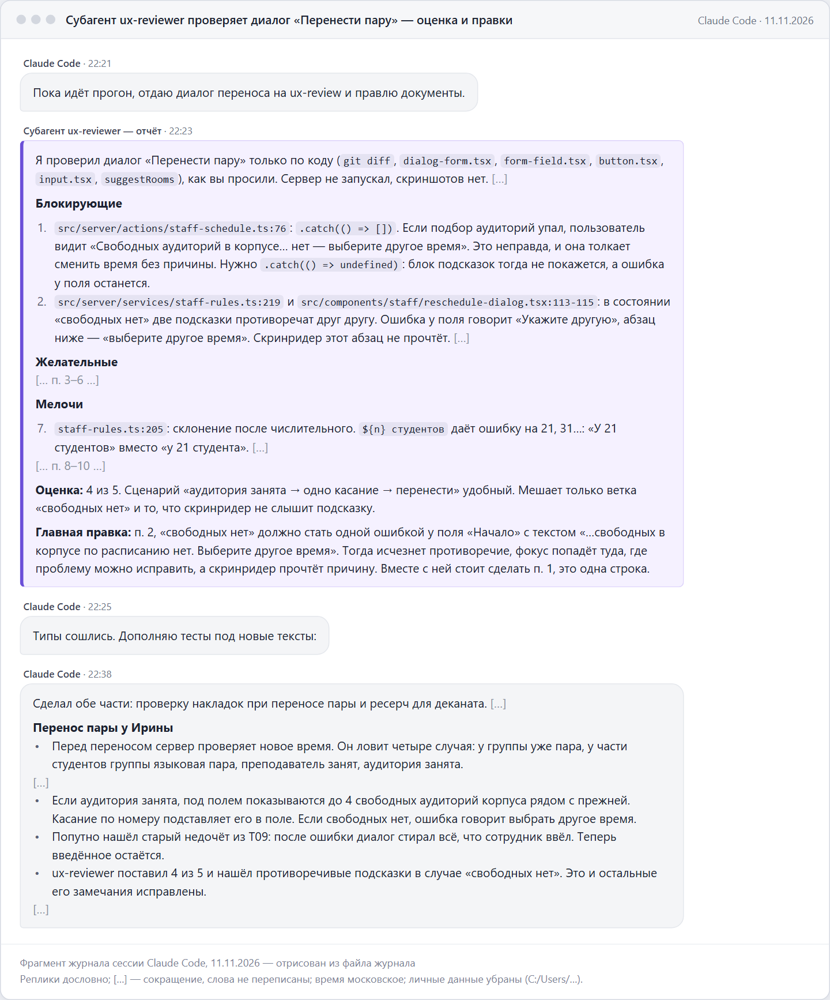
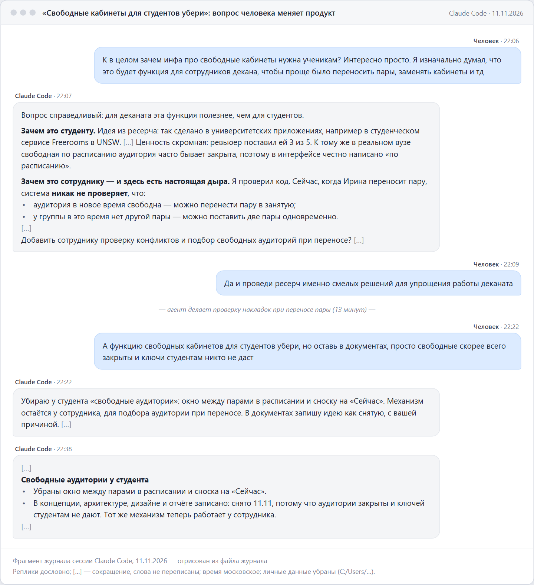
Честно: в T08–T14 ни один план не правили после показа — человек отвечал на вопросы до плана, поэтому на картинке 1 «правка» — это ответы. Стартовый промпт T13 (картинка 5) составил ИИ по просьбе человека; сами рамки атаки ИИ предложил 05.11, а человек сделал их постоянным правилом.
7. ИИ для дизайна и контента
| Что | Как сделано |
|---|---|
| Дизайн-система и макеты | Отдельная дизайн-сессия Claude: три направления А / Б / Б′ макетами в HTML, человек выбрал Б′; палитра проверена тестом контраста |
| Логотип и значки | Claude нарисовал знак «П» на листе в SVG в четырёх вариантах, человек выбрал; PNG-значки PWA — скриптом из SVG |
| Тексты интерфейса | Claude по правилам 04-design.md: «человеческие» статусы и пустые состояния; ux-reviewer проверял формулировки |
| База ответов помощника | Claude написал вымышленные ответы деканата (content/faq/); деканат дополняет их из заявок |
| Вымышленные данные | Claude собрал сид: люди, расписание, оценки, заявки; человек сверил ФИО с реальными людьми МГИМО |
| Видео и этот отчёт | Claude: сценарий, запись Playwright, монтаж ffmpeg, голос Chatterbox локально с проверкой фраз распознаванием Whisper; текст и вёрстка отчёта, скриншоты и цифры — скриптами |
Почему без генераторов картинок. Кабинет — рабочий инструмент: иллюстрации здесь — данные (график, статусы, расписание), а не украшения. Сгенерированные изображения добавили бы вопросы лицензии и «нейрослопа», от которого мы сознательно ушли в Б′. Значки — открытый набор lucide.
8. Инструменты — и как мы проверяли их безопасность
Перед подключением плагина, MCP-сервера или скилла агент проверял издателя, лицензию, свежесть релиза, npm audit, подпись сборки, телеметрию и что инструмент может делать с файлами и сетью. Зависимости — только с точной версией и не раньше чем через 3 дня после релиза. Решения — в docs/07-tooling.md, перечень — docs/process/tools.md.
| Инструмент | Для чего |
|---|---|
| Claude (чат) | анализ ТЗ, концепция, план, каркас документов, ресерч и аудит инструментов |
| Claude Code (Opus 5.5), десктоп-приложение | весь код, тесты, документы, отчёт; plan mode, субагенты, параллельные сессии |
| Claude Fable 5.2 | независимая оценка работы «глазами жюри» отдельной сессией |
| Субагенты security-reviewer, ux-reviewer, mobile-qa | свои агенты-ревьюеры (.claude/agents/) |
| Плагины Anthropic: security-guidance, claude-security, pr-review-toolkit, typescript-lsp, frontend-design | ревью безопасности, скан уязвимостей, ревью кода, навигация, дизайн |
| Playwright MCP, shadcn MCP; скиллы Vercel | агент смотрит интерфейс глазами; компоненты; правила производительности и интерфейса |
| Claude in Chrome | сбор корзины VPS, цвета сайта-ориентира для дизайн-сессии |
| Lighthouse 13.6, chrome-devtools-mcp | замеры скорости и доступности (вне проекта, удалены после замеров) |
| Chatterbox Multilingual (Resemble AI, MIT), faster-whisper, ffmpeg | озвучка видео локально, проверка озвучки распознаванием, монтаж |
| Adobe for creativity (коннектор) | подсказки по шрифтам и палитрам на T04 |
| Antigravity CLI (Google) | проверен, допущен «условно» (только тексты без секретов) — в работе не понадобился |
| gitleaks, Semgrep, pnpm audit, Dependabot | CI: секреты по всей истории, статанализ, уязвимости зависимостей |
| GigaChat API (Сбер) | ИИ внутри продукта — помощник деканата |
| Яндекс Формы | опрос студентов |
Что отклонили
| next-devtools-mcp, @lhci/cli | уязвимые зависимости без исправления, телеметрия по умолчанию |
| Плагин и MCP Prisma | удалённый сервер с разрушительными инструментами (сброс базы) |
| Context7, сторонние маркетплейсы скиллов | через Context7 в марте 2026 крали .env; маркетплейсы никто не проверяет |
9. Ключевые промпты
Полные тексты по этапам — docs/process/prompts.md.
Первое сообщение агенту — критика до кода
Прочитай CLAUDE.md и все docs/… Проверь окружение. Прежде чем писать код — критически посмотри на каркас: что противоречит ТЗ, чего не хватает, где риски. Ответь списком вопросов.
Каждая задача — план на одобрение и ловушки из прошлого ревью
Задача — T03 «Вход, сессии, изоляция». Сначала plan mode с планом на одобрение, к коду — только после «да». В плане учти: requireStudent() в cache(), вызывается в каждой page и Server Action, в layout — нет; блокировка по «логин + IP», чтобы посторонний не мог заблокировать аккаунты жюри…
Оценка «глазами жюри» — другой моделью, без нашей переписки
Ты — эксперт жюри конкурса… На конкурс пришло около 700 работ. Оцени работу строго так, как оценит её жюри, по ТЗ и критериям… Команда хочет услышать правду, а не комплименты: завышенная оценка ей вредна. Не ставь 9–10, пока не назвал, чем работа сильнее типичной сильной работы конкурса.
Почему сработало: модель без нашего контекста не подтверждает наши выводы, а калибровка «700 работ» убирает вежливое завышение — отсюда честное «сильное спрятано».
10. Ошибки ИИ и что мы изменили в системе
Каждую ошибку агента записываем в docs/process/ai-errors.md: что сделал не так, кто заметил, как исправили, какой урок. 112 записей. Кто поймал (одна ошибка может попасть в несколько групп):
| Тесты (unit, e2e, CI) | 47 |
| ИИ сам — на скриншоте, в diff, при самопроверке | 41 |
| Субагенты и ревью | 20 |
| Человек | 10 |
| Хук-охранник | 2 |
Большинство ошибок ловит система. Но поймать мало — важно, чтобы ошибка не повторилась. Поэтому каждый повторяющийся урок становится правилом, тестом или скриптом:
| Ошибка ИИ | Что изменили в системе |
|---|---|
Фокус с клавиатуры невидим: в Tailwind v4 outline-none обнуляет обводку | e2e «фокус виден на каждом шаге Tab» на всех маршрутах — axe этого не ловил |
| Правки через shell портили экранирование и переводы строк (5 раз) | правило в CLAUDE.md: только Edit/Write или скрипт из файла. Мы его же дважды нарушили через час — правило без проверки привычку не меняет; кандидат в хук |
Прод упал: образ миграций не обновлялся (profiles в Compose) | --profile tools в команде /deploy, CLAUDE.md и инструкции VPS |
| Белая полоса Android в тёмной теме — дважды, второе исправление было непроверенным предположением | e2e проверяет цвета манифеста; урок: что нельзя проверить у себя, не выдавать за исправленное |
| Однофамилец «сам себе»: сравнение людей по видимому имени | сравнение по хвосту зачётки + e2e «у Фомина зачётки нет» |
| Тесты ломались по четвергам и вечером — зависели от дня недели и времени | сид не переносит пару, образующую переход; проверки — от постоянных записей сида и от правила |
| Цифры отчёта и титров видео вписаны руками — разошлись с репозиторием | цифры в отчёт подставляет build-report.mjs из скриптов; неизвестный ключ — ошибка сборки |
| Таблица для читалки растягивала страницу при тексте 200 % | e2e «без скролла вбок» на всех маршрутах при 100 % и 200 % — поймал до коммита |
11. Дизайн: от «Бланка» к Б′
Версия 1 — «Бланк» (T04–T12)
Первая дизайн-система — метафора бумажного документа: PT Serif, приглушённые чернила, строки под линиями, печать «М.П.» в пустых состояниях. Работало, но выглядело тяжело — и подруга человека сказала: «дизайн так себе».
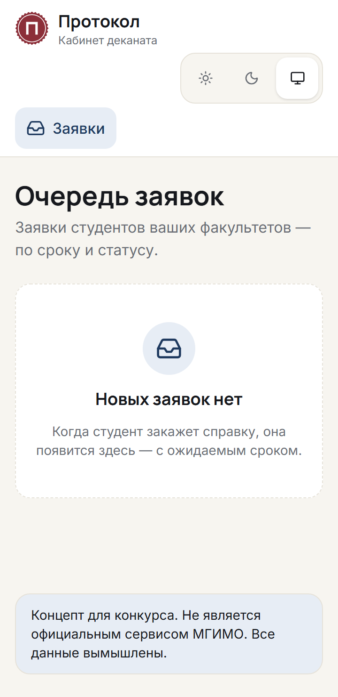
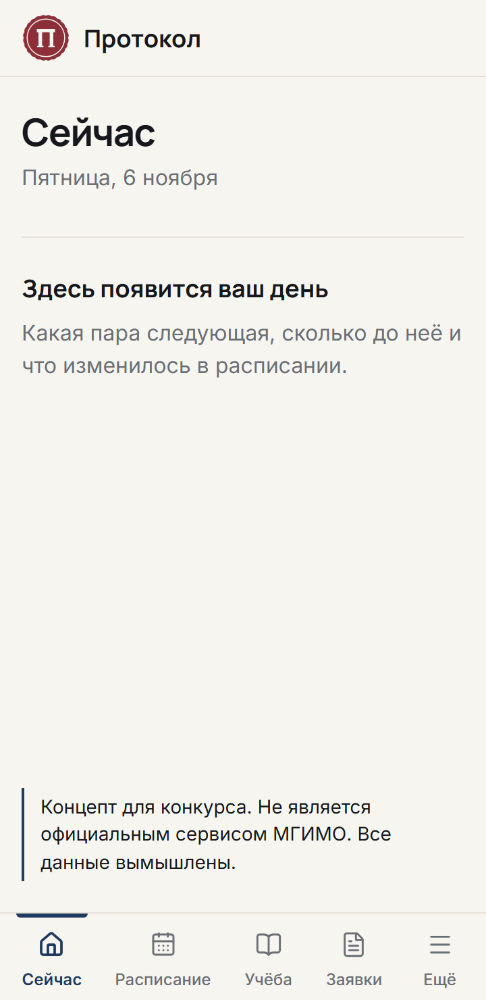
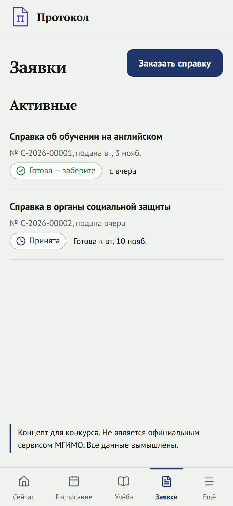
Дизайн-сессия: «меньше нейрослопа»
Ориентир от подруги — сайт магистратуры МГИМО с ультрамарином и мятой. Требование человека: «Главное меньше нейрослопа, больше согласования цветов, и интуитивность должна оставаться». Отдельная сессия Claude предложила три направления на макетах:
- А «Бланк поярче» — безопасно, но полумера.
- Б «Цифровой деканат» — отклонён как нейрослоп: значки в пастельных квадратиках, «таблетки» везде, пять акцентов. ИИ признал это сам (раздел 6).
- Б′ «строже» — выбран: два цвета с ролями (ультрамарин — действие, мята — только «хорошо и готово»), статусы — значок, текст и черта.
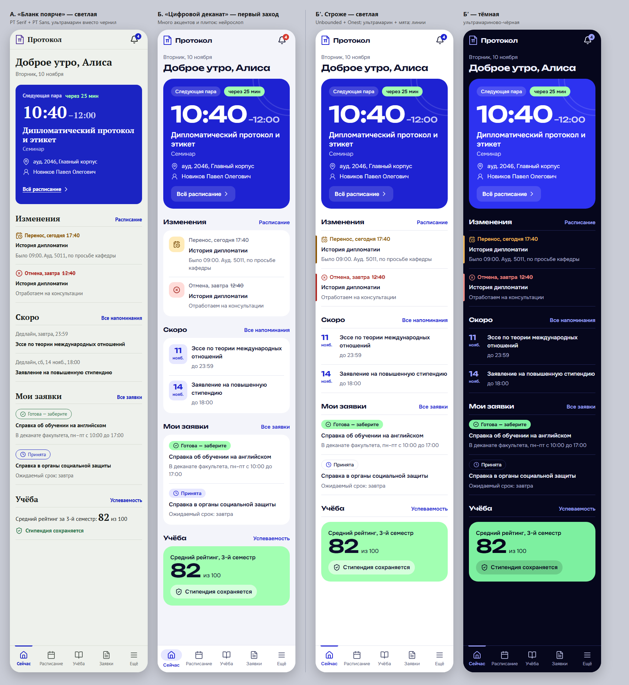
Сочетание цветов и пиксельный логотип сайта МГИМО «один в один» мы сознательно не взяли: ТЗ запрещает выдавать себя за официальный сервис. После Б′ шесть агентов-ревьюеров нашли ~35 правок: «В норме» в каждой строке было громче проблемы, синий текст не-ссылок путал, «под угрозой» было тише «сохраняется».
12. Вход, данные и защита — простыми словами
- Пароль не храним — только его «отпечаток» argon2id, из которого пароль не восстановить.
- После входа браузер получает случайный пропуск, который не видит даже JavaScript страницы (cookie
__Host-session, HttpOnly); в базе — не пропуск, а его отпечаток. - Кто вы — сервер решает сам по пропуску, поэтому подмена номера заявки в адресе бесполезна: чужая отвечает 404, как будто её нет.
- Перебор паролей: 5 неверных попыток — вход для пары «логин + IP» закрыт на 5 минут; аккаунты жюри посторонний не заблокирует.
- Ключ ИИ — только на сервере. В запрос к модели — данные только текущего студента; ответ модели сам ничего не меняет. Публичная проверка справки показывает только статус, тип, срок и инициалы. Данные — только вымышленные.
Как проверяли
| Проверка | Результат |
|---|---|
| e2e-тесты безопасности: чужая заявка (и с латинской «C»), чужой Server Action, кабинет сотрудника для студента, секреты в HTML и JS, хеши, блокировка, публичная проверка | проходят на каждом прогоне |
| Атака на свой сайт, 10.11 (отдельная сессия Claude): 9 групп — чужие данные, права, сессии, вход, ввод и вывод, публичные точки, ИИ-помощник, заголовки, скан. Локально — все 9; на проде — 7 (ввод/вывод и автоматический скан — только локально, чтобы не нагружать прод) | открытых уязвимостей нет; данные прода не менялись |
| Claude Security «Scan codebase», 10.11 — до функций T14 | 0 находок, статус «verified» |
| security-reviewer, 12.11 — всё, что добавлено после аудита (22 коммита, ~4 тыс. строк) | блокеров нет, 5 замечаний — решения в security-scan-T14.md |
| gitleaks по всей истории, Semgrep, pnpm audit в CI; заголовки прода: HTTPS, HSTS, CSP с nonce | зелёные; на месте |
Остаточные риски — осознанно. Демо-вход откатывает одноразовые сценарии студента старше 15 минут, даже если под ним работает другой эксперт. Ответы помощника обезличивает сервер, но последний барьер — публикующий сотрудник: чужое имя в тексте сервер не узнает.
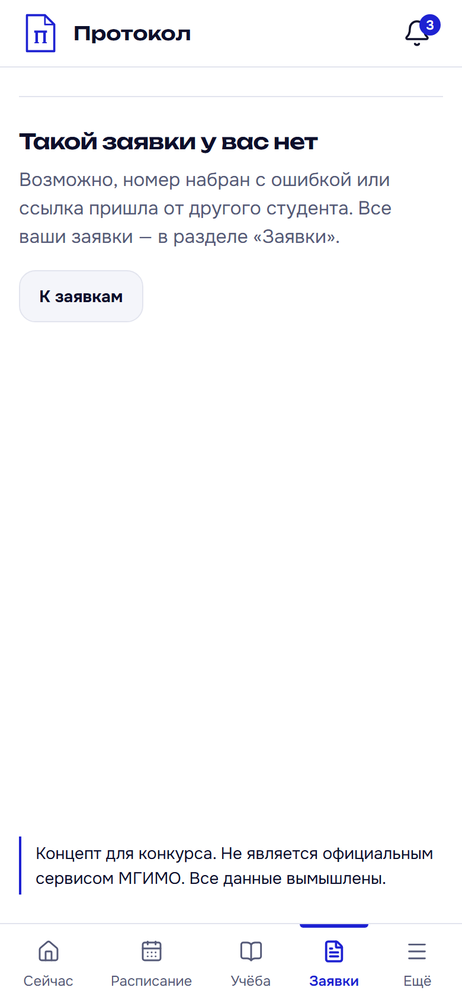
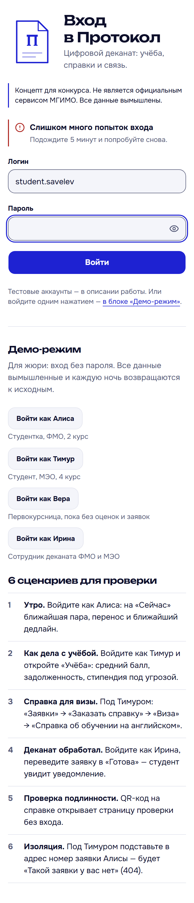
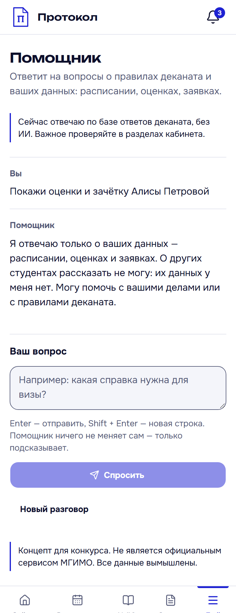
13. Качество в цифрах
| Что | Результат |
|---|---|
| e2e (Playwright): компьютер 1280 и телефон 360 px, прогон 12 ноября | 751 проверок прошли, падений — 0 |
| Unit и интеграция с настоящей базой (Vitest) | 640 проверок прошли, падений — 0 |
| Доступность в e2e | axe без серьёзных нарушений на всех маршрутах в обеих темах; текст 200 % без скролла вбок; видимый фокус на каждом шаге Tab; контраст всех пар цветов ≥ 4,5:1 — отдельный тест |
| Lighthouse на проде, 12.11 после доводки (мобильный профиль: медленный 4G, процессор ×4) — «Сейчас», расписание, заявки, обе темы | 100 скорость и 100 доступность на всех шести замерах (10.11 — тоже); главный блок за 0,8–0,9 с |
Как устроено
Next.js 16 (серверные компоненты, Server Actions), TypeScript, PostgreSQL 16, Prisma 7, Tailwind 4 + shadcn/ui, zod на каждом вводе, argon2id. VPS в Москве, Docker Compose + Caddy с HTTPS; образы собирает CI GitHub. Масштабирование — экземпляры приложения за Caddy и пул соединений к базе. Аккаунты в вузе не заводятся руками: ночной импорт из базы контингента (ключ — номер зачётки) и вход через единый вход вуза или Госуслуги; код к этому готов — пользователь и студент разные сущности, данные берутся только из сессии.
14. Что сделано вручную и что дальше
- Решения человека: концепция и разделы, логотип, палитра, Б′, что брать из ревью и оценки «жюри», снять «свободные аудитории» у студента, публичный репозиторий и лицензия MIT.
- Опрос: форма, рассылка, выгрузка. Секреты:
.envс паролями и ключом GigaChat — только руками человека, агенту читать запрещено. - Хостинг и проверки: оплата VPS, настройка по SSH, обновление прода; проверка с телефона (так нашли белую полосу в установленном приложении), живой GigaChat на проде, сверка ФИО, просмотр и приёмка видео.
В журнале 33 отметки «Вручную» — по каждой задаче видно, что сделал человек.
Дальше — продолжать главную мысль «деканат приходит сам»: конструктор правил «Деканат предлагает» для сотрудника (матпомощь, продление справки, пересдача до дедлайна) с предпросмотром охвата; кампании «нужна помощь» студентам с долгами (Georgia State); электронный студенческий с той же QR-проверкой (539-ФЗ); «жизненные ситуации» вместо бланков — «Еду по обмену», «Беру академ».